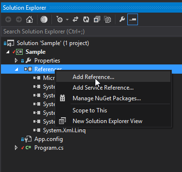
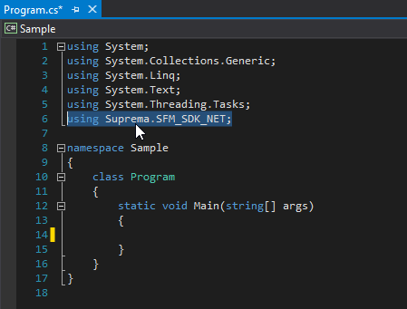

.NET¶
Quick start¶
Step 1
Download these files.
SFM_SDK.dll
SFM_SDK_NET.dll
SFM_SDK_NET.XML
Note
SFM_SDK.dll is a library file for C/C++.
SFM_SDK.dll is a native library file for .NET
SFM_SDK_NET.XML is a file for documentation of .NET library.
Step 2
Create a .NET project.
Step 3
Add reference on your project above SFM_SDK_NET.dll file.

Warning
SFM_SDK_NET.XML should be located with SFM_SDK_NET.dll for correct works of intellisense in microsoft visual sutdio.
Step 4
import reference.
1 | using Suprema.SFM_SDK_NET; |

Now, Write your source code using SDK Manual
Step 5
Build your program. Then run.
Example code¶
How to init serial COM port?¶
1 2 3 4 5 6 7 8 9 10 11 12 13 14 15 16 17 18 19 20 | using System; using System.Collections.Generic; using System.Linq; using System.Text; using System.Threading.Tasks; using Suprema.SFM_SDK_NET; namespace Sample { class Program { static void Main(string[] args) { SFM_SDK_NET SFM = new SFM_SDK_NET(); UF_RET_CODE result = new UF_RET_CODE(); result = SFM.UF_InitCommPort("COM3", 19200, false); Console.WriteLine(result.ToString()); } } } |